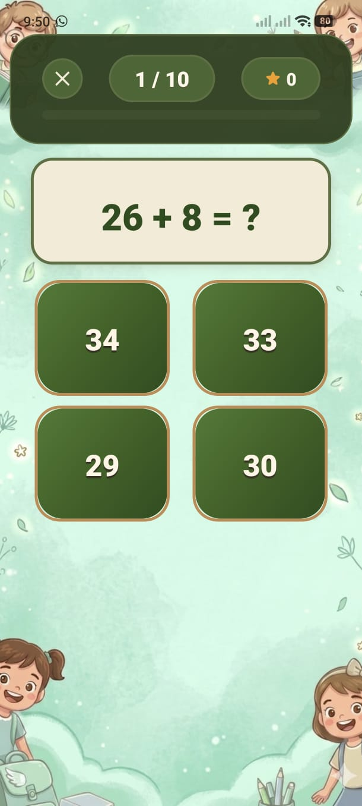

Every wrong answer you give is automatically saved. Come back and drill those exact questions until you get them right every time.
During any game mode (Daily, Practice, Speed, Mixed), every question you answer incorrectly is silently saved to your personal mistakes queue. You don't need to do anything — it happens automatically in the background.
The ❌ Mistakes Practice button on the Home screen shows a red badge with the number of saved mistakes waiting for you.
Mistakes Practice uses a smart queue:
A saved mistake is shown — the same equation that tripped you up before.
If you get it right, the question is permanently removed from the queue. You've mastered it!
If you get it wrong again, the question is shuffled back into the queue. It will reappear later in the same session.
When every question in the queue has been answered correctly at least once, an "All Done" screen appears and the queue is empty.
For ages 9–10 (who type their answers), if you type the wrong answer a hint briefly reveals the correct value before the next question loads. This reinforces the correct answer immediately after the mistake.
If you want to start fresh, a Clear All Mistakes button is available at the bottom of the Mistakes Practice screen. This permanently deletes the entire queue.
Each correct answer in Mistakes Practice triggers a small confetti or emoji burst animation — extra positive reinforcement for working through difficult questions.
Add your screenshot here
guide/img/screen-mistakes.png